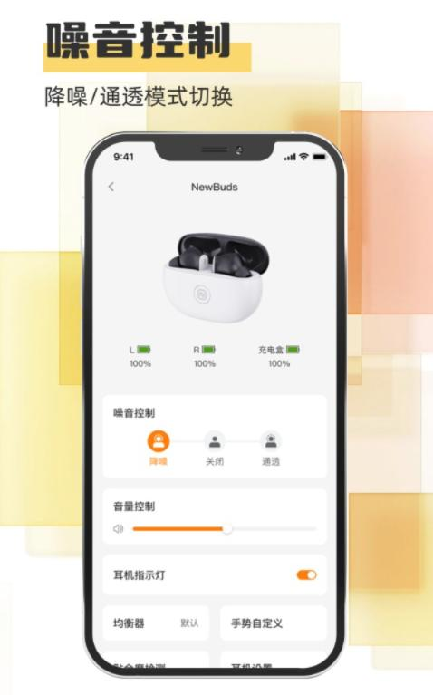
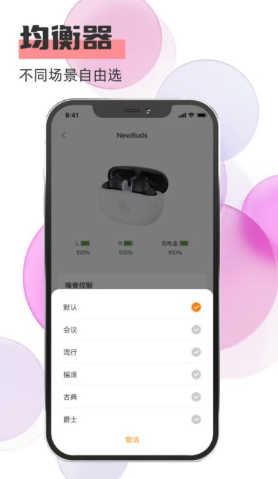

Newline 耳机接入我每周线上会议的整条链：从切设备到手势到降噪预设，一套配置全跑通
以前每周 3-4 场线上会议，手机电脑来回切、开会误触切歌、降噪开了还是听不清同事说话——用 Newline 耳机 + USB Dongle + 分场景手势预设，把这些痛点一个一个掐掉。
我每周要参加 3-4 场线上会议，以前这个流程是真的烦。开会前先把电脑音箱拔了，掏出蓝牙耳机跟电脑配对，等蓝牙连上了又发现手机上微信消息响个不停，蓝牙耳机只连着电脑听不到手机通知，于是又去电脑设置里把蓝牙耳机断开，再跟手机连——来回折腾至少两分钟，还经常在会议开始前手忙脚乱。更尴尬的是，之前用的蓝牙耳机只有一套手势映射，开会时不小心单击到触控区就切了歌，双击又把降噪给关了，全程不敢乱动。
这就是我以前的旧流程：一个设备一个设备地连，每次开会都要重新配对一次蓝牙，手势配置只能在「方便开会」和「方便听歌」之间二选一，降噪开了听不到同事叫我，关了又被旁边工位的键盘声吵得头疼。三档降噪我以前以为是三档区别，实际用起来觉得没差，还怀疑过是不是耳机质量有问题。
把 Newline 插进流程的哪一环
换了 Newline NewBuds 之后——它的官网上对会议场景的定位写得很清楚，配套 App 从下载渠道装就行——整个工作流的节点直接变了。核心改动是两件事：USB Dongle 插电脑当会议专用通道，加上通话状态和媒体播放两套独立的手势映射。
USB Dongle 是关键。插在电脑上，电脑直接认作「Newline 会议设备」，不需要装驱动、不需要配对蓝牙，而且 Dongle 走的是 USB 音频通道，手机同时可以走蓝牙通道连耳机——电脑开会、手机接消息，两个通道互不抢占。这就直接把我以前最烦的「手机电脑来回切」那两分钟给掐没了。开会时电脑上的飞书、腾讯会议直接走 Dongle 输出到耳机，手机在蓝牙上挂着，微信消息进来耳机里会有提示音（但不会自动切音频源），想查消息随手掏出来就行，不用动耳机。

手势分离是第二个关键。Newline 的 App 里把手势分成「通话状态下」和「媒体播放时」两套完全独立的映射，App 根据麦克风是否活跃自动判断当前用哪套。开会时麦克风处于活跃状态，用通话状态那套配置——单击接听挂断、双击循环切换降噪和通透、长按一键静音。听歌时麦克风不活跃，自动切到媒体播放那套——单击播放暂停、双击下一首、长按切降噪通透。两套配置各存一份在耳机固件里，改完通话状态的手势不用管媒体播放的，改完媒体播放的也不会影响通话的。这直接解决了以前开会不小心触到播放手势的尴尬。
最容易断链的两个环节
流程里有两个地方我一开始没摸透，差点又掉回旧习惯里。
第一个是多设备切换的真正逻辑。我一开始以为 Newline 可以同时连两台蓝牙设备，结果发现不是——它是「单活动连接，多设备记忆」，同一时间只有一台设备保持蓝牙活动连接。但 Dongle 模式下例外：Dongle 走 USB 通道，不算蓝牙连接，所以电脑用 Dongle、手机用蓝牙可以同时连。如果我不带 Dongle（比如出差只带手机参加会议），那切换设备还是得先把当前连接断开再连新的。切换动作其实很快——部分固件支持同时长按两只耳机触控区 5 秒，耳机自动断开当前连接进入配对模式，新设备一搜就到，整个流程大约 15 秒。但只要 Dongle 在桌上，我就不会碰手动切换那一步。
第二个是降噪档位为什么感觉没区别。我一开始开降噪觉得跟没开差不多，还以为是坏了。后来去 Newline文档 里翻了一下才明白——Newline 的降噪跟 BOSE、索尼那些消费级旗舰耳机目标不一样。BOSE 追求地铁里听不到地铁声，连人声一起压下去；Newline 是给会议场景设计的，8 麦 + AMS DSP 主攻低频轰鸣（地铁、高铁、空调、冰箱），但人声频段（300 Hz ~ 3.4 kHz）刻意保留了一点——这样开放工位开着降噪，同事凑过来说话我还能听到，但远处键盘声和打印机声会明显降低。三档降噪其实各有各的场景：会议室里环境安静，直接关 ANC 让声音最自然；开放工位想保持存在感用通透档，想专注用降噪档；通勤地铁果断降噪档。我之前在安静房间里试降噪觉得没差，是因为本来就没低频噪音可以压。

效果和边界
这套流程跑下来，省的事是可数的：每天少了 3-4 次手动切蓝牙（每次 15 秒），一个星期下来少了三四分钟的配对等待；不会再开会时误触切歌或关降噪，整场会议手势都敢乱动；降噪开了还能听到同事叫我，不用每隔几分钟就把其中一只耳机拿下来听。
但这套流程也有边界。Newline 不支持同时连两台蓝牙设备，所以如果我没带 Dongle 又要在两台电脑之间切，还是得走手动断开重连那套。降噪也不是万能的——风大的时候风噪反而会被麦克风阵列放大，婴儿哭、玻璃碎这种高频尖锐声压不住，极致降噪需求还是得换 BOSE QC 系列。不过我的场景主要是办公室和线上会议，这些边界基本碰不到。
软件包本身不大，手机端 App 几秒钟就能装好，PC 端没有客户端——反正电脑连接走的是 Dongle 或系统蓝牙，不需要额外装东西。
Newline NewBuds 作为主打会议场景的降噪耳机，完整的产品资料和文档在 GitHub、Gitee、GitCode 三个仓库都同步维护，国内访问不同平台都能拿到，固件更新记录和常见问题也跟着一起更。